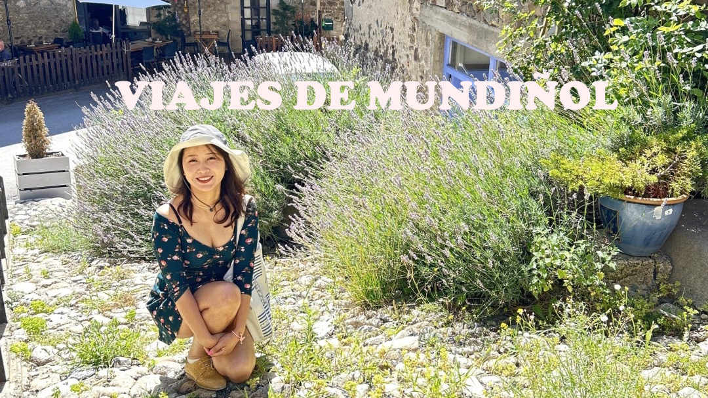
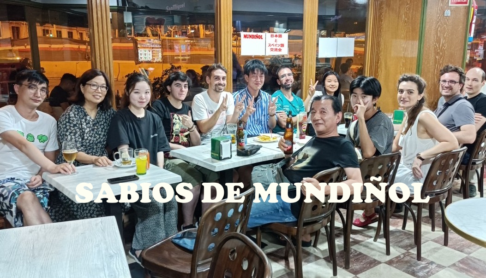

VIAJES DE MUNDIÑOL
MUNDIÑOL es una organización sin ánimo de lucro muy conocida en Cataluña. Está formada por extranjeros que viven en Barcelona por estudios o por working holiday, y por catalanes y otros hispanohablantes interesados en aprender idiomas y culturas de otros países. Juntos, hacemos viajes y excursiones.
La inscripción es gratuita, y el único requisito es tener ganas de aprender, ser sincero, serio y educado.
¡ÚNETE A MUNDIÑOL!
y aprendamos juntos
Primero, echemos un vistazo a esta lista de vídeos cortos de nuestros viajes.
CANALES DE YOU TUBE
Suscríbete a los cuatro canales de YouTube de MUNDIÑOL.


Y si te interesa, ¿por qué no vienes a una de nuestras Quedadas de MUNDIÑOL para conocer en persona a quienes aparecen en los vídeos y escuchar sus experiencias de viajes directamente?
QUEDADAS DE MUNDIÑOL

Las Quedadas de MUNDIÑOL se celebran cada semana en Barcelona. La participación es gratuita. Se reúnen personas de Japón, China, Corea, Taiwán y otros países de Asia y Europa para charlar, principalmente, sobre los idiomas, dialectos, culturas y gastronomías de Cataluña, España, Europa y Asia.
Verás también que hay muchos hispanohablantes y europeos que hablan japonés, chino u otros idiomas asiáticos con fluidez.
¡MUNDIÑOL es el único grupo en Barcelona donde puedes aprender seriamente y de forma gratuita sobre los idiomas y culturas de Asia Oriental! Presentación de diapositivas
Cada lunes, 20:45 - 22:50
The New Orleans (Pere d'Artés 10)
Metro：Virrei Amat (L5)
Cada miércoles, 20:30 - 22:50
Viena Pelayo (Pelai 16)
Metro：Universitat (L1, L2)
Cada viernes, 21:00 - 23:30
Alex Bar Restaurant (Còrsega 170)
Metro：Hospital Clinic (L5)
MUNDIÑOL no solo organiza encuentros de intercambio lingüístico y cultural sino que también hace viajes, excursiones, picnics, barbacoas y visitas turísticas por Barcelona durante los fines de semana y festivos. A menudo, también participan niños menores de 10 años.
MUNDIÑOL es, al mismo tiempo, una institución educativa que abarca desde la educación infantil hasta la universidad y un lugar muy conocido para que empresas y emprendedores que desean expandir su negocio a nivel internacional encuentren talento cualificado.
Si quieres aprender o enseñar idiomas y culturas asiáticas, si quieres aprender o enseñar español o catalán, si tienes una empresa o eres emprendedor y buscas conectar España y Asia a nivel empresarial, o si eres una empresa que busca profesionales asiáticos con un alto nivel de español y experiencia en diversos sectores...
MUNDIÑOL es la plataforma perfecta para ti.
¡ÚNETE A MUNDIÑOL!
y te lo pasarás la mar de bien
¡VIAJEMOS TODOS JUNTOS!
MÁS TEMAS DE MUNDIÑOL
MUNDIÑOL SHOP BARCELONA
Accesorios hechos a mano, amuletos de Japón y China y ropa casi nueva a un precio muy bajo. Puedes recibir tu pedido en las quedadas de Mundiñol. Si estás en Barcelona, visítanos. Podrás encontrar accesorios artesanales con gemas y otras cosas de Asia.
¡APRENDAMOS JAPONÉS O CHINO!
El japonés y el chino tienen una gramática bastante sencilla, pero son muy diferentes de las lenguas europeas. Por eso, lo mejor es aprender con un profesor con una larga experiencia en la enseñanza, que conozca bien la gramática del español y pueda explicártelo de manera clara.
Si tomas clases con un buen profe una o dos veces por semana y repasas unos 30 minutos al día, en menos de seis meses podrás decir lo básico en japonés o chino.
Cuando ya puedas mantener una conversación básica, puedes practicar gratis en los QUEDADAS DE MUNDIÑOL, que se hacen tres veces por semana. Y si sigues así durante un año, ¡podrás decir muchas más cosas!
Si eres una persona, una escuela o una empresa que busca un profesor de japonés con experiencia y talento,
o si eres de una productora que necesita figurantes o modelos japoneses para cine o series,
MUNDIÑOL es un espacio correcto para ti.
Para cualquier cosa relacionada con Japón, su cultura o el idioma japonés, haz clic en el botón de abajo y contáctame sin compromiso.
PONTE EN CONTACTO
WhatsApp +34 665165267
Los miembros de Mundiñol vienen de sectores muy variados. No solo se dedican a la enseñanza de idiomas, sino también a la tecnología de la información, el desarrollo web, la gastronomía, la hostelería, la atención al cliente e incluso el mundo del espectáculo como actores, modelos o figurantes.
JAVASCRIPT DE MUNDIÑOL

Mundiñol no solo es un espacio para aprender idiomas y culturas del mundo, sino también una comunidad de expertos en informática, web y desarrollo de juegos. Descubre, juega y programa.
JavaScript es un lenguaje de programación interpretado, dialecto del estándar ECMAScript. Se define como orientado a objetos, basado en prototipos, imperativo, débilmente tipado y dinámico.